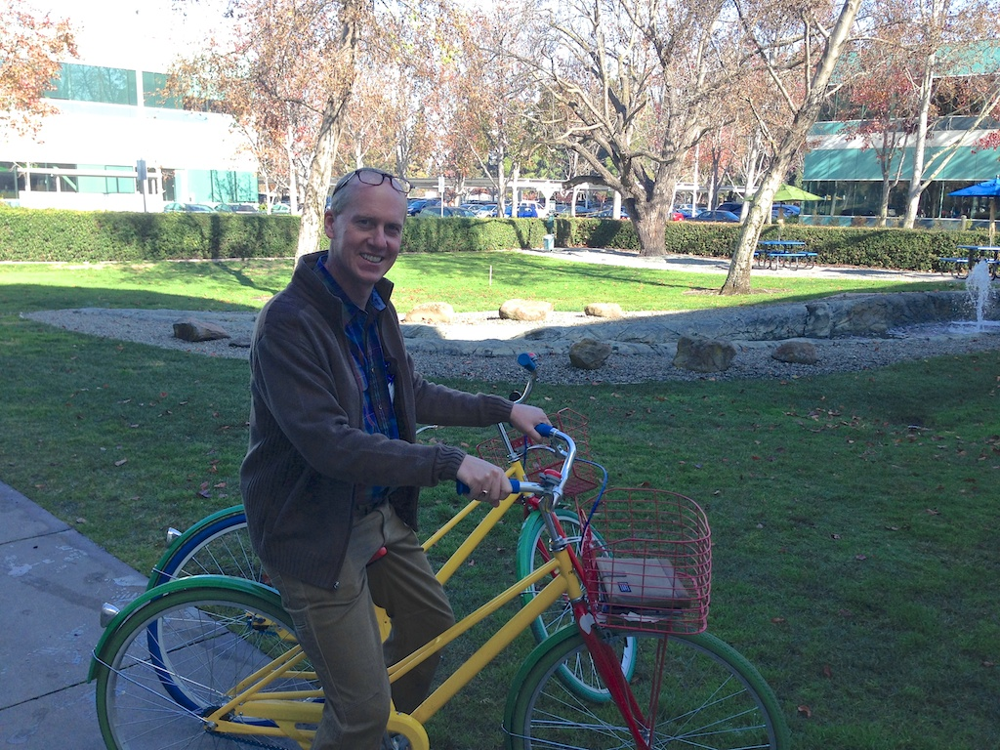

The Social Implications of a Self-Driving Car
Today we moved south, from Fisherman's wharf down to Menlo Park. But most of the day was spent at Google. This was certainly a day that everyone has been looking forward to for most of the trip.
My interest in Google+ was renewed by a great tech talk by Ed Chi. Who said some very nice things about me in front of my students. They probably think I paid him. We heard about supporting an organization as large as Google from Luther Alum Charles Banta, and about i18n -- i(nternationalizatio)n from Luther Alum and former CS faculty member Craig Cornelius. Yes there are 18 letters between the parenthesis! We had a fabulous tour of campus, a stop in the 3D printer lab, time at the gift shop, and of course, lunch at Charlie's Cafe.
You have probably heard about Google's famous slides, but they also have fire poles for people that want to quickly get down a floor. And, in case you don't want to walk between buildings they have these cool Google Bikes all over the place. Guests are encouraged not to ride the bikes, but nobody said anything about posing with one for your picture.

The other talk we heard was from Brian, a member of the self driving car project, who gave us a quick overview of the Google X Chauffeur Project. The technology is interesting, and I have to admit I hadn't really thought past the cool sensors, and modeling that would be required. But, what is even more interesting are the many social implications of self driving cars.
Brian pointed out a couple of interesting facts for us to consider. Most people dedicate more space in their homes to their car or cars than they do to their own children's living space. He also asked us to think about all the cars in the parking lot outside the office we were in. What fraction of the time are those cars in use? Are they parked 90% of the time?
What if our self driving cars could take the kids to school in the morning, and then return a while later to bring us to work? What if we could just bring up our smart phone and request a self driving car to pick us up at work and drop us off at home. We might not need such large garages. Could we turn much of our driveway space into gardens? Would this mean the end of rush hour? Probably not, but if the car was self driving, could a self driving car pick up you and a couple of friends on a logical path to work and drop you off? On the freeways would traffic flow more fluidly if the cars could talk to each other and the automated sensor systems were good enough to ensure a nice safe drive with cars spaced out 10 feet apart? A self driving car has no need to slow down and gawk if there is an accident.

Would we collectively own fewer vehicles if our car could be called to pick us up with the touch of a button on our smart phone, or automatically scheduled to pick us up based on our daily calendar?
The big car companies will say that self driving cars are 30 years in the future. The researchers at Google feel like we are more like 5-10 years from reality. Who is better situated to make that call? The companies with the navigational, and sensor technology, with access to smart phone interfaces and calendars? In short a company like Google? Personally, I'm rooting for Google on this one, and can't wait to buy into my first self driving car collective.
Comments